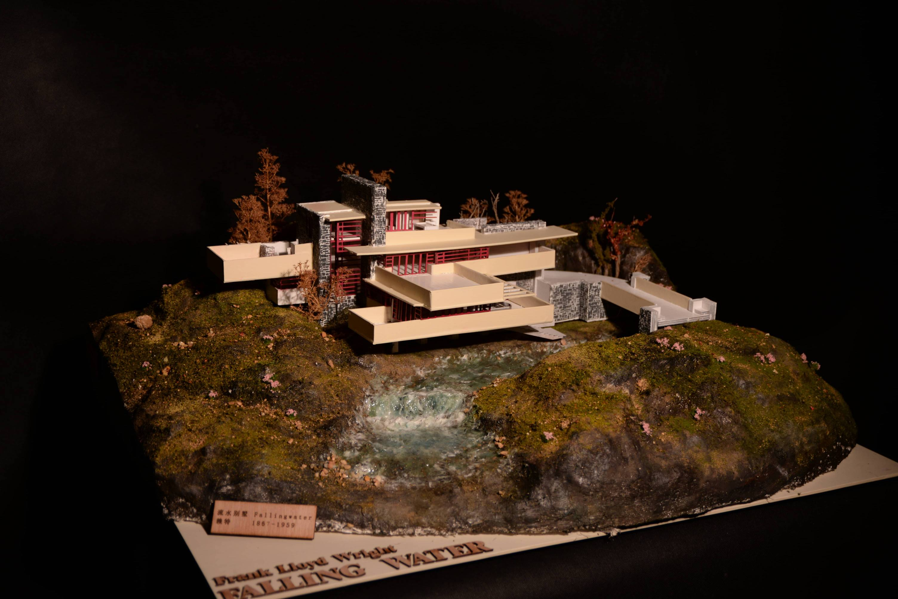
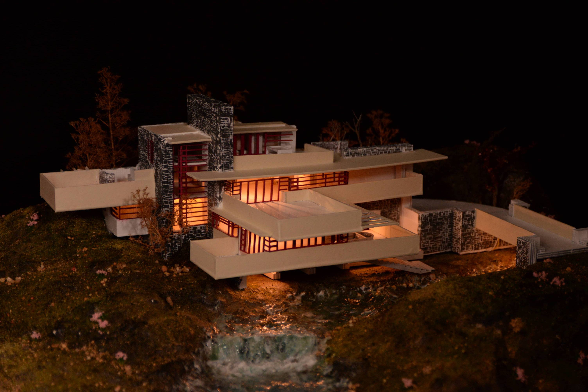

流水别墅 · 建筑雕塑模型
以弗兰克·劳埃德·赖特的流水别墅为蓝本，通过手工雕塑的方式重新诠释这座二十世纪最伟大的建筑之一。模型忠实还原了建筑与自然共生的核心哲学——悬挑的露台、层叠的岩石、与瀑布融为一体的空间叙事。


流水别墅（Fallingwater）是赖特于1935年设计的住宅，坐落于宾夕法尼亚州熊跑溪的瀑布之上。建筑从岩石中生长而出，悬挑的混凝土露台与周围森林形成有机的整体。
这件雕塑模型以1:100的比例还原了建筑的标志性特征——层叠的水平线条、穿插的竖向岩体、以及水从建筑下方流过的戏剧性空间关系。
"No house should ever be on a hill or on anything. It should be of the hill. Belonging to it."
—— 弗兰克·劳埃德·赖特
赖特相信建筑应当从场地中自然生长。流水别墅正是这一哲学的极致表达——建筑不是被放置在景观之上，而是景观的一部分。这件雕塑试图捕捉的，正是这种"属于"的关系。
创作过程
深入研究流水别墅的建筑图纸、历史照片与赖特的设计理念，理解建筑与场地的关系、结构系统的创新，以及空间叙事的逻辑。
确定模型比例与材料方案，规划悬挑结构的支撑方式，推敲岩石、瀑布与建筑的层次关系，确保模型能传达原作的空间张力。
以综合材料手工搭建主体结构，逐层塑造混凝土质感的悬挑露台，雕刻岩石基座与瀑布水景，反复调整各部分的比例与细节。
对表面质感进行精细处理，强化材料的表现力，调整光影效果，最终呈现一件能够传达流水别墅精神气质的雕塑作品。